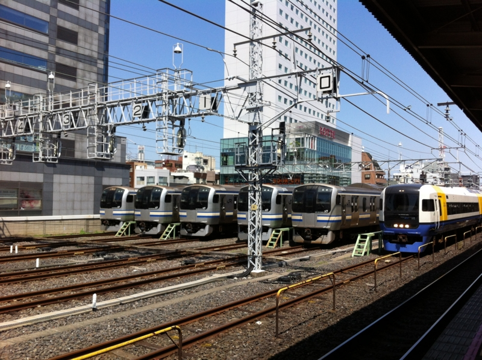
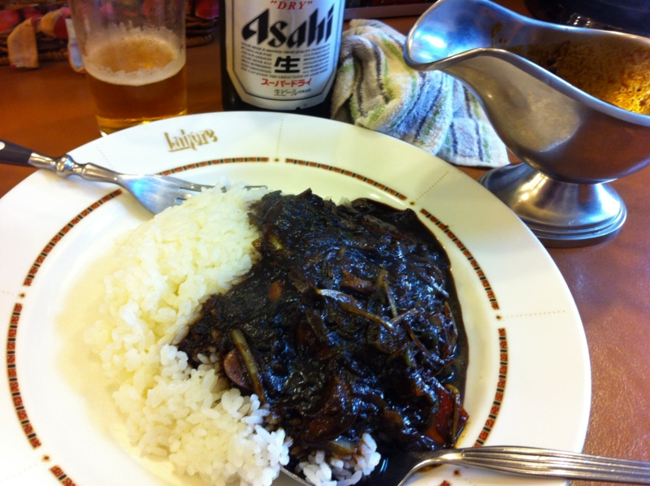

連休8日目。お見送りとアキバ徘徊。
公開日：

連休7日目。成田空港。 - だるろぐ で借りた車を実家に帰さなければならなかったので、途中、我が家を数日にわたって占拠していた @5zj と @toriimiyukki を東京駅へ放り出し、その足で千葉へ向かった。途中、京葉道路がダダゴミで、下道へ逃げたのだけど、それでも2時間ぐらいかかってほんとげんなりした。やっぱ連休中はクルマに乗るものじゃないな。

GIGABYTE intel H77 LGA1155 ATX GA-H77-D3H
- 出版社/メーカー: 日本ギガバイト
- 発売日: 2012/04/09
- メディア: Personal Computers
- クリック: 1回
- この商品を含むブログを見る
帰りは電車だったのだけど、ついでだしアキバまで足を延ばして、初期不良（？）だったマザボの代替品を買いに行った。今回は B75 チップセットのマザーボードではなくて、H77 チップセットのマザーボードを買った。なぜそんな気になったのかはよくわからないけれど……。B75マザーは返品がきかなかったらイタいなぁ。

この前ぶっ壊した iPad の修理*1とお昼御飯もアキバで。いつも気になってた黒カレーをアテにビールを嗜む。三辛に挑戦したのだけど、もっとがっつり辛くてよかったので、今後は五辛にしようかなぁ、と思う。個人的にはもっと本格なインドカレーのほうが好みだけど、これはこれでありなのかな。
マザーボードの封は開けず、その日はそのまま寝落ち。
*1:後日詳述